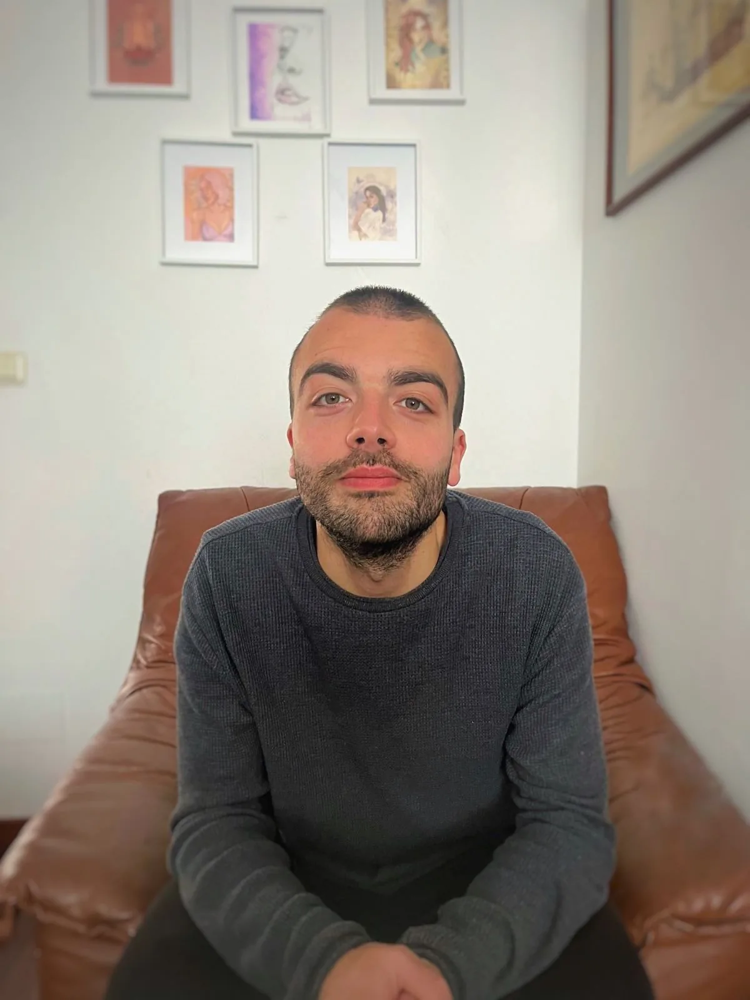
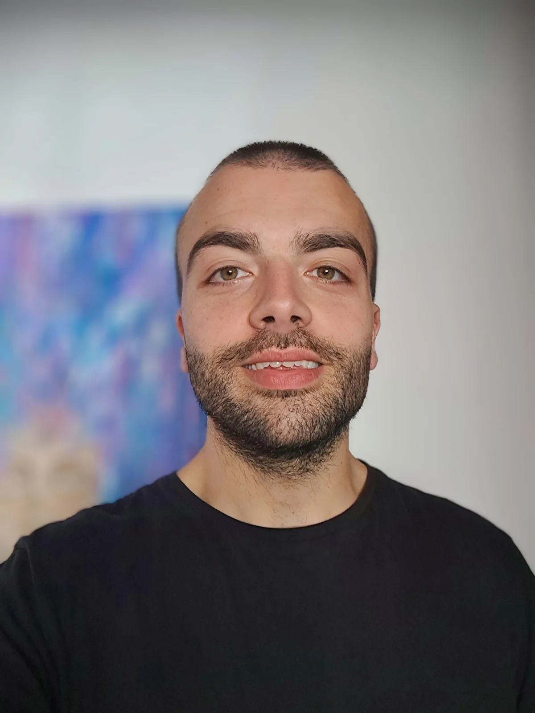

Terapia de Rebirthing Breathwork
ROBERTO LIÑARES
"La respiración es el puente entre tu mente consciente e inconsciente" - Thich Nhat Hanh

Terapia de Rebirthing Breathwork
El rebirthing o renacimiento es una técnica de respiración consciente que se centra en la idea de que la forma en que respiramos es un fiel indicador de nuestro nivel de bienestar mental y físico. Es un tipo de respiración suave y conectada que busca entrar en contacto con las sensaciones que se despiertan en nosotros a medida que vamos profundizando en este proceso.
La realidad es que es estas sensaciones, ya sean agradables o desagradables, tiene un origen emocional que responden únicamente a las circunstancias vividas por la persona, y el hecho de darles un lugar seguro para que se expresen nos permite soltar aquellas experiencias o emociones que ya no aportan nada positivo a nuestra vida. Es una herramienta poderosa de autoconocimiento y crecimiento personal que nos invita a tomar la responsabilidad de nuestra propia vida.
A su vez la respiración es una de las mejores herramientas para trabajar con nuestro sistema nervioso, ya que permite que el conocimiento se integre y baje al cuerpo. Dándonos acceso a una comprensión más profunda de nosotros mismos.
¿Por qué es tan importante trabajar con el cuerpo para nuestro bienestar?
A veces en terapia cuando se aborda un conflicto desde lo puramente cognitivo ocurre que la persona no es capaz de resolverlo aún estando decidida a hacerlo. Esto puede ocurrir cuando no se está teniendo en cuenta la información recogida en el cuerpo.
Un ejemplo práctico de esto pueden ser las personas que buscan constantemente la aprobación de los demás. Es común que la persona que viene a trabajar esto entienda que esta conducta tiene que ver con su infancia, cuando solo recibía amor si hacía lo que se esperaba de ella. Sin embargo, a pesar de que se compromete e intenta revertir la situación sigue habiendo comportamientos en la vida de esta persona que resuenan con esta herida. Y es que en su cuerpo todavía está ese dolor emocional al que nunca se le dio el espacio necesario para ser expresado.
A través de herramientas como el rebirthing, que presta atención a este lenguaje de sensaciones del cuerpo y permite que esta energía bloqueada se libere podemos conectar con nuestro estado natural de bienestar y regulación emocional.
En cuanto a mí como terapeuta, a parte de acompañar a personas en sus procesos personales a través del renacimiento, también tengo formación en terapias del trauma, que en esencia tiene que ver con el abordaje de memorias traumáticas desde una perspectiva amable e integradora.

¡Hola! Soy Roberto, terapeuta especializado en acompañar a personas en sus procesos personales a través de una técnica transformadora llamada Rebirthing Breathwork. Mi viaje en el mundo de la terapia comenzó con un enfoque más espiritual, donde descubrí herramientas que me ayudaron a conectar con mi ser más profundo.
Mi primer acercamiento fue a través de la sanación espiritual por arquetipos, una técnica integral que trabaja desde el cuerpo físico hasta las dimensiones más sutiles del ser. Comencé como paciente, y tras experimentar sus beneficios, decidí formarme en esta práctica. Al principio, la aplicaba en mí mismo, pero pronto otros comenzaron a pedirme ayuda, lo que me llevó a compartir esta herramienta con más personas.
Después de un par de años, sentí la necesidad de profundizar más en mi proceso personal. Así fue como descubrí el Rebirthing Breathwork. Al recibir sesiones de respiración, experimenté cambios significativos en mi vida y una comprensión más profunda de mí mismo. Esto me motivó a realizar la capacitación profesional en esta técnica.
A lo largo de mi trayectoria, me di cuenta de la importancia de entender lo que ocurre a nivel físico, emocional y mental durante las sesiones de respiración, especialmente cuando las personas enfrentan experiencias o emociones dolorosas. Este interés me llevó a profundizar en el estudio del trauma, y hoy en día continúo formándome en este campo.
Mi objetivo es ofrecer un espacio seguro y acogedor donde puedas explorar y sanar tus propias heridas. Estoy aquí para acompañarte en tu viaje hacia el autoconocimiento y la transformación personal.
¡Espero poder acompañarte en este hermoso proceso!